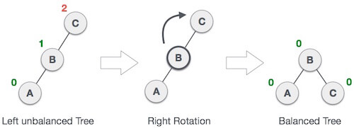
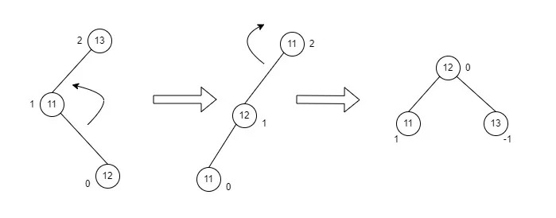
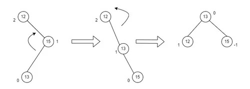

Also known as Left Skew Tree.When a node is inserted into right subtree of a right subtree, the tree gets unbalanced. It can be balanced by rotating a node in left.

Also known as Right Skew Tree.When a node is inserted into left subtree of a left subtree, the tree gets unbalanced. It can be balanced by rotating a node in right.
It is a combination of left and right rotation. In this first left rotation takes place followed by right rotation.
It is a combination of right and left rotation. In this first right rotation takes place followed by left rotation.
